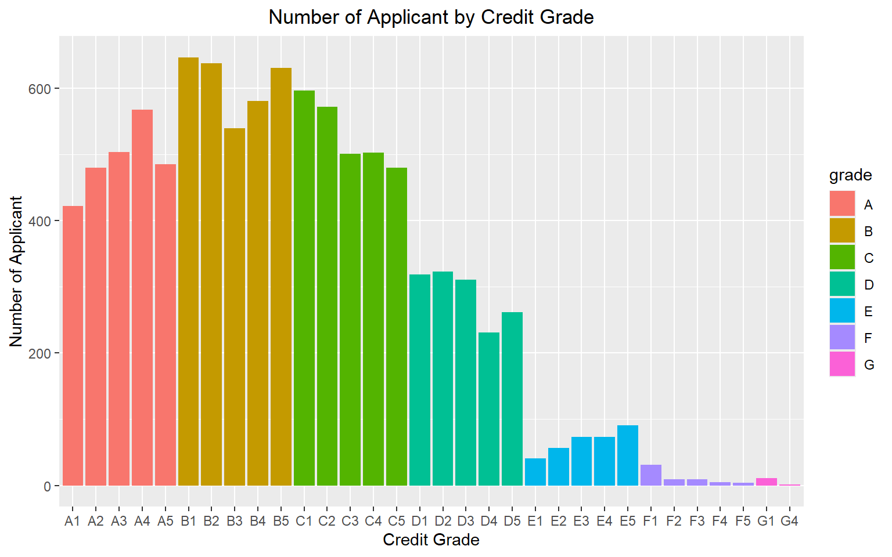

Week 3 Answers (0916)
1 Download Data
Please download the datasets county.csv and loan_full_schema.csv here.
2 Coding Style
Create an RStudio project inside a folder with proper names (e.g. TA_Session).
Create folders for R scripts and data. (optional: put scripts for the first two weeks’ TA session in the script folder as well.)
For the following questions, your code should follow the coding styles in the slides.
3 Contingency Table
Using the dataset loans_full_schema.csv, create a contingency table by loan_purpose (set as row) and application_type (set as column), and add the sum row and sum column.
loan <- read.csv("data/loans_full_schema.csv")
table <- table(loan$loan_purpose, loan$application_type)
table_sum <- addmargins(table)
print(table_sum)## individual joint Sum
## car 116 15 131
## credit_card 1971 278 2249
## debt_consolidation 4289 855 5144
## home_improvement 566 114 680
## house 146 5 151
## major_purchase 273 30 303
## medical 128 34 162
## moving 59 10 69
## other 793 121 914
## renewable_energy 9 1 10
## small_business 101 24 125
## vacation 54 8 62
## Sum 8505 1495 100004 Bar Graph
Using the dataset loans_full_schema.csv, draw the bar graph to show the numbers of applicant according to each credit grade by following procedures:
- Specify
sub_gradeas the x-axis, and fill the bar withgrade. - Add graph title and axis labels
- Title:
Number of Applicant by Credit Grade
- x-axis:
Credit Grade
- y-axis:
Number of Applicant
- Title:
- Center the graph title.
TipHint
Hint: Add theme(plot.title = element_text(hjust = 0.5)) to the graph.
After that, you should have a beautiful graph and share it with me! :)
ggplot(loan, aes(x = sub_grade, fill = grade)) +
geom_bar() +
labs(
x = "Credit Grade",
y = "Number of Applicant",
title = "Number of Applicant by Credit Grade"
) +
theme(plot.title = element_text(hjust = 0.5))